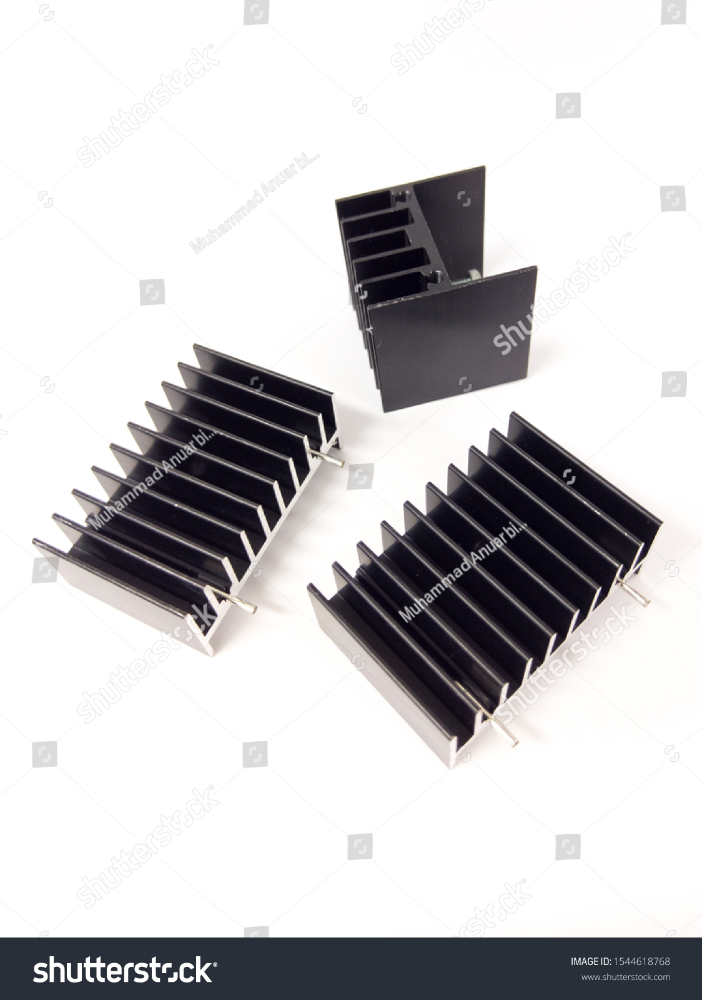

What is a Heat Sink?
A heat sink is a passive component used to dissipate heat generated by electronic devices. It typically consists of a metal (often aluminum or copper) with fins or pins that increase the surface area, allowing the heat to be transferred to the surrounding air more efficiently.

Types of Heat Sinks
Passive Heat Sinks:
These heat sinks rely on natural convection to dissipate heat without any external power or fans. The fins or surface area allow heat to naturally dissipate into the surrounding air.
Uses: Common in low-power devices such as microcontrollers, LEDs, and resistors.
Active Heat Sinks:
These heat sinks incorporate a fan or other external power sources to actively cool the device. The fan pushes air over the heat sink to increase airflow and heat dissipation.
Uses: High-power devices like CPUs, GPUs, power transistors, and voltage regulators.
Heat Pipes with Heat Sinks:
These heat sinks use heat pipes to transfer heat away from sensitive components quickly. Heat pipes work through phase change, where the heat evaporates and condenses, transferring thermal energy.
Uses: High-performance systems such as gaming computers, servers, and industrial equipment.
Applications of Heat Sinks in Electronics
Heat sinks are essential in managing the temperature of various electronic components:
- CPU and GPU cooling in computers
- Power electronics such as voltage regulators and transistors
- LED lighting systems
- Power supplies and amplifiers
ஹீட் சிங்க் (Heat Sink)
ஹீட் சிங்க் என்பது மின்சார கூறுகளில் உற்பத்தி செய்யப்பட்ட வெப்பத்தை அகற்றுவதற்கான ஒரு பாசிவ் கூறாகும். இது பொதுவாக தங்கம் அல்லது தாமிரம் போன்ற மெட்டலில் செய்யப்பட்ட பின்கள் அல்லது பட்டைகள் கொண்டதாக இருக்கும், இது சுற்றுப்புற வானிலை எதிரொலியை அதிகரித்து வெப்பத்தை பரப்புகிறது.
ஹீட் சிங்கின் வகைகள்
பாசிவ் ஹீட் சிங்க் (Passive Heat Sink):
இந்த ஹீட் சிங்க்கள் வெப்பத்தை பரப்புவதற்கான எந்தவொரு வெளிப்புற சக்தியையும் அல்லது ரசிகர்களையும் இல்லாமல் இயற்கையாக வெப்பத்தை பரப்பும். பின்கள் அல்லது மேற்பரப்புகள் சூழல் காற்றில் வெப்பத்தை இயற்கையாக பரப்ப உதவுகின்றன.
பயன்பாடுகள்: குறைந்த ஆற்றல் கொண்ட சாதனங்களில், சிறிய மைக்ரோகண்ட்ரோலர்கள், LED கம்பிகள் மற்றும் ரெசிஸ்டர்களில் பயன்படும்.
செயலில் ஹீட் சிங்க் (Active Heat Sink):
இந்த ஹீட் சிங்க்கள் ஒரு ரசிகர் அல்லது பிற வெளிப்புற சக்திகளை பயன்படுத்தி சாதனத்தை குளிர்ச்சி செய்ய செயலில் இருக்கின்றன. ரசிகர், ஹீட் சிங்கின் மேல் காற்றை பாய்ச்சுவதன் மூலம் குளிர்ச்சி அளிக்க உதவுகிறது.
பயன்பாடுகள்: உயர் ஆற்றல் கொண்ட சாதனங்கள், CPU, GPU, பவர் டிரான்ஸிஸ்டர்கள் மற்றும் வேல்டேஜ் ரெகுலேட்டர்களில் பயன்படும்.
ஹீட் பைப் மற்றும் ஹீட் சிங்க் (Heat Pipes with Heat Sinks):
இந்த ஹீட் சிங்க்கள் ஹீட் பைப் களை பயன்படுத்தி வெப்பத்தை சமர்ப்பிக்க உதவுகின்றன. ஹீட் பைப், வெப்பத்தை ஒழுங்குபடுத்தும் பேஸ் சஞ்சலத்தைக் கொண்டு செயல்படுகிறது.
பயன்பாடுகள்: உயர் செயல்திறன் கொண்ட கணினி கம்ப்யூட்டர்கள், சர்வர்கள் மற்றும் தொழில்துறை சாதனங்களில் பயன்படும்.
மின்னணுவியல் கூறுகளில் ஹீட் சிங்கின் பயன்பாடுகள்
ஹீட் சிங்க்கள் மின்னணு கூறுகளில் வெப்பத்தை கட்டுப்படுத்துவதில் முக்கிய பங்கு வகிக்கின்றன:
- கணினி CPU மற்றும் GPU குளிர்ச்சி
- பவர் மின்சார கூறுகள், வேல்டேஜ் ரெகுலேட்டர்கள், டிரான்ஸிஸ்டர்கள்
- LED ஒளி அமைப்புகள்
- பவர் சப்ளை மற்றும் ஆம்பிலிஃபையர்கள்